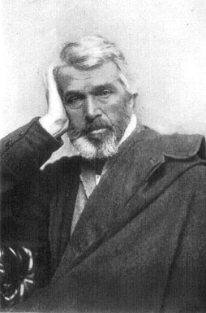

Thomas Carlyle (1795-1881)

Avrupa'nýn dahi muhakkiklerindendir. Ýskoç asýllý tarihçi, yazar ve eleþtirmen. 4 Aralýk 1795 tarihinde Ecclefechan'da (Dumfriesshire, Ýskoçya) doðdu. Kalabalýk bir aile çocuðu olup, annesi ve sekiz kardeþine olan aþýrý baðlýlýðýný ömrü boyunca devam ettirdi. Köy okulunu bitirdikten sonra Annan Akademisi'ne gönderildi (1805). Bu okuldan sonra Edinburg Üniversitesi'ne gitti (1809). Bu sýrada belli bir konu üzerinde yoðunlaþmamakla beraber çok sayýda eser okudu. Babasý papaz olmasýný istediyse de buna ilgi göstermedi. Matematik eðitimini alarak 1814'te bu dersi vermeye baþladý.Öðretmenliði býrakarak, 1819 Üniversitesi'ne hukuk eðitimini almak üzere geri döndü. Bu tarihlerden itibaren inanç dünyasýnda önemli deðiþiklikler ve geliþmeler oldu. Bu durumu 1836 yýlýnda kaleme aldýðý "Bay Teufelsdröckh'ün Yaþamý ve Düþünceleri" adlý eserinde yazdý. Bu arada Alman Edebiyatýna ve özellikle Goethe'ye ilgi duydu. 1826 yýlýnda evlendi. Bu dönemde ve evliliði boyunca maddi sýkýntý çekti.
Geçimini yazdýðý yazýlarla saðlamaya çalýþýyor ancak, gerekli desteði görmüyordu. Buna raðmen fikirlerinden ödün vermediði gibi, büyük bir tarih eserini yazmaya baþladý. Büyük maddi sýkýntý yaþamasýna raðmen böyle bir giriþimde bulunmasý dikkat çekicidir. Bu eserle beraber yoðun tarih araþtýrmalarýna giriþti. 1837 yýlýnda eserini tamamlayýnca çok büyük alaka görerek halkýn sevgisini kazandý. Bundan sonra çok sayýda konferans çaðrýsý aldý. Dolayýsýyla maddi durumu da önemli ölçüde düzeldi.
Maddeciliðe ve rasyonalizme karþýydý. Siyasi ve kültürel tarihin akýþýný ancak olaðanüstü kiþilerin deðiþtirebileceðini savundu.Ýlahi aydýnlýðý hedef aldý. Bir duvarcýnýn oðlu olup yoksulluk içinde yaþadýðý zamanlar çoktur.
1837 yýlýnda "Fransýz Devrimi" adlý büyük eserini kaleme aldý. Yalnýzca giysilere ve dýþ görünüþe önem verilen, riyakar bir toplumda yaþamaktan müthiþ bir derecede rahatsýz oldu. Fransýz Devrimi sonrasý saray mensubu ve soylularýn çýlgýnlýk ve bencilliklerini eleþtirdi. Bu durum onu manevi deðerler üzerinde daha fazla yoðunlaþmasýný netice verdi.
Gittikçe müthiþ bir derecede kök salan ve toplumda þiddetli bölünmelere, sýnýflar arasýndaki farkýn zenginden yana geliþmeyi netice veren, kapitalist sisteme þiddetle karþý çýktý. Chartism (1840), Kahramanlar (1841), Geçmiþ ve Bugün (1843) adlý eserlerinde, "býrakýn yapsýnlar" yaklaþýmýný eleþtirdi Burjuva sýnýfýnýn vurdumduymazlýðý ile rejim karmaþasýna eleþtiriler yöneltti. Geleneksel iktisadi sisteme karþý çýktý. Bozulan ve gittikçe yok olan deðerler üzerine eðilerek, bunlarýn yaþatýlmasý veya yeniden topluma kazandýrýlmasý gereði üzerinde durdu. O, Ýslam Dünyasý ve Almanya'da, eski deðerler üzerinde kurulacak yeni bir düzenle inkiþaf edileceðine inandý.
Ülke çapýnda bir üne kavuþup maddi sýkýntýlarý aþtýðý, feraha ulaþtýðý bir anda eþinin ölümü, hayatý üzerinde çok etkili oldu. Bundan sonra geçen on beþ yýl boyunca kendini toparlayamadý.1881 yýlýnda Londra'da öldü.
Carlyle, 1841'de yayýnlanan "On Heroes, Hero-Worship and the Heroic in History adlý eserinde; Hz. Muhammed'i kahramaný, Dante ve Þhakespeare'i sevdiði þairleri, Luther ve Knox'u din adamý, Johnson ve Burns'i edebiyatçý, hükümdar olarak da Cromwell ve Napoleon'u gördüðünü ve beðendiðini yazdý (Bu kitabýn Hz. Muhammed Aleyhisselam ile ilgili kýsmý, "Peygamber Kahraman Muhammed" adýyla Türkçe tercümesi -1958,1963- yayýnlandý). On dokuzuncu yüzyýldaki kargaþadan ötürü, daha önceki düzene övgüler yazdý. Ancak, dogmatik kiliseden tiksindiði gibi Hýristiyanlýðý da reddetti. Sýradan insanlarý sevmezdi. Hýristiyanlýðýn zayýflara ve günahkarlara fazla deðer vermesini hazmedemiyor, Ýncil'in doðruluðundan þüphe duyuyordu.
Daha önce eðitim gördüðü Edinburg Üniversitesi'nin rektörlüðüne atandý ve göreve baþlarken yaptýðý ilk konuþmada yüksek ahlaký öðütledi. Ayný yýl bastýrdýðý "Kitap Seçimi Üzerine" adlý eseri ve baþarýlý rektörlüðü ile parlak bir baþarý kazandý. Ýnanç noktasýnda en çok etkilendiði hususlarýn baþýnda; Yaratýcý'ýn yüceliði ve ruhun ölümsüzlüðü gelir.
Özellikle fen bilimlerindeki hýzlý geliþmeler, araþtýrmalara dayanan fikir ve düþüncelerin ön plana çýkarak hak ettikleri deðeri kazanmalarý, ..."Ýslâmiyet güneþinin tutulmasýna (inkiþafýna) ve beþeri tenvir etmesine mümânaat eden perdeler açýlmaya baþlamýþlar. O mümânaat edenler çekilmeye baþlýyorlar" þeklindeki ifadeleri doðruladý.
Ömrü boyunca arayýþ içinde olan ve çok sayýda eser okuyan Carlyle, kiliseyi ve Hýristiyanlýðý eleþtirdiði gibi Hz. Muhammed'e olan hayranlýðýný da açýklamaktan ve eserlerinde belirtmekten çekinmedi. Hakka taraftar olup, Ýslam Peygamberinin faziletlerini dile getirdi ve övgüler yaðdýrdý. Dini taassubun hüküm sürdüðü ve Ýslam beldelerinin tek tek iþgal edildiði bir dönemde bir üniversite rektörünün Hz. Muhammed (asm), Kur'an-ý Kerim ve Ýslamiyet hakkýndaki övücü sözleri dikkate deðerdir Türkçe olarak yayýnlandýðýný belirttiðimiz eserinin ilgili bölümlerinden bir kýsmýný Bediüzzaman Hazretleri de bazý eserlerine almýþ ve Onu övücü ifadeler kullanmýþtýr.
Carlyle'ýn ifadeleri tamamen araþtýrmaya dayanýp yýllarýn araþtýrmalarý sonucu tahakkuk eden birikimin neticesidir. "Baþka kitaplar, hiçbir cihette Kur'ân a yetiþemez. Hakiki söz odur, onu dinlemeliyiz" (Emirdað Lahikasý. s.235). "Kur'ân'ý bir kere dikkatle okursanýz, Onun husûsiyetlerini izhâra baþladýðýný görürsünüz. Kur'ân'ýn güzelliði, diðer bütün edebî eserlerin güzelliklerinden kàbil-i temyizdir. Kur'ân'ýn baþlýca húsûsiyetlerinden biri, onun asliyetidir. Benim fikir ve kanatime göre, Kur'ân, serâpâ samîmiyet ve hakkàniyetle doludur. Hazret-i Muhammed'in (a.s.m.) cihâna teblið ettiði dâvet hak ve hakîkattir" (Ýþaratü'l-Ýcaz, s. 265). "Ýslâmiyet gayet parlak bir ateþ gibi doðdu. Sair dinleri kuru aðacýn dallarý gibi yuttu. Hem bu yutmak Ýslâmiyetin hakký imiþ. Çünkü sair dinler-fakat Kur'ân'ýn tasdikine mazhar olmayan kýsmý-hiç hükmündedir". "En evvel kulak verilecek sözlerin en lâyýký Muhammed'in (aleyhissalâtü vesselâm) sözüdür. Çünkü, hakikî söz, onun sözleridir"(Hutbe-i Þamiye s. 36-37). Yoðun araþtýrmasýnýn sonunda yazdýðý bu ifadeler ayný zamanda, doðru bildiðini pervasýzca ifade eden özelliðinin de bir göstergesidir.
Bilim çaðý olarak sona eren yirminci yüzyýlýn baþýnda, müdekkik alimlerin araþtýrmalarýnýn, Ýslam güneþinin daha da parlatmayý netice vereceðini müjdeleyen, "Ben dünyaya iþittirecek bir derecede kanaat-i kat'iyemle derim: Ýstikbal yalnýz ve yalnýz Ýslâmiyetin olacak ve hâkim, hakaik-i Kur'âniye ve imaniye olacak" diyen Bediüzzaman Hazretleri, "Avrupa ve Amerika Ýslâmiyetle hâmiledir. Günün birinde bir Ýslâmî devlet doðuracak" þeklindeki tesbitlerine örnek olarak gösterdiði önemli þahsiyetlerden birisi de Carlyle'dýr.